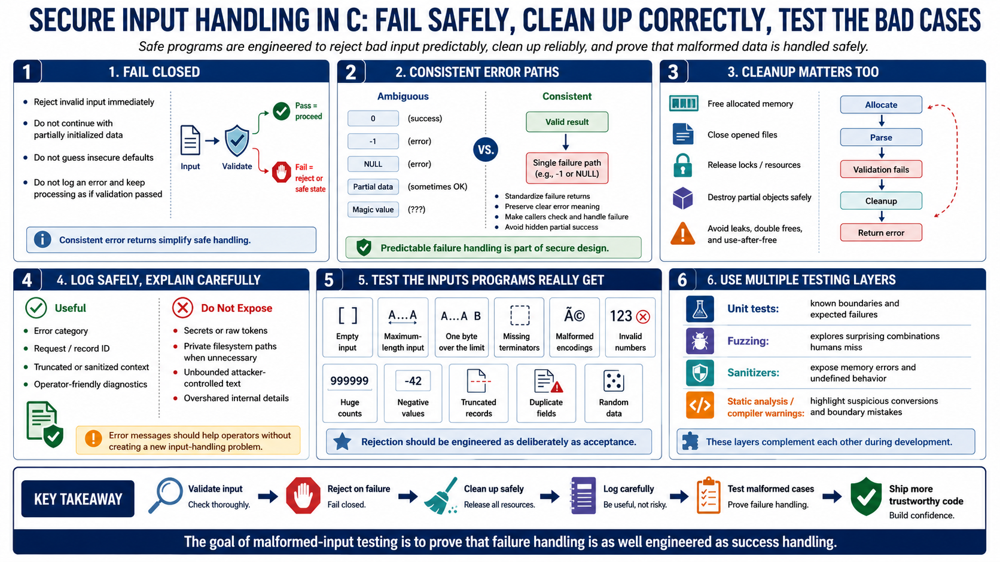

Defensive Error Handling and Testing
Connecting to LMS... Progress: in progress

Narration
Secure input handling depends on what happens when input is wrong. Fail closed means the program rejects, stops, or falls back to a safe state when a required check fails. It does not continue with partially initialized data. It does not guess a default that changes the security meaning of the request. It does not log an error and keep processing as if validation succeeded. Consistent error returns make this easier because callers can handle one clear failure path instead of many ambiguous outcomes.
Cleanup paths deserve the same attention as success paths. A parser that allocates memory, opens files, locks resources, or builds partial objects must release them correctly when validation fails. The cleanup code should avoid leaks, double frees, and use-after-free behavior. Logging is useful, but log messages should not expose secrets, raw tokens, private paths, or unbounded attacker-controlled text. Error messages should help operators diagnose problems without becoming another input handling problem.
Testing should include the inputs real programs actually receive: empty input, maximum-length input, one byte over the limit, missing terminators, malformed encodings, invalid numbers, huge counts, negative values, truncated records, duplicate fields, and random data. Unit tests are good for known boundaries. Fuzzing is valuable because it explores combinations humans do not think to write by hand. Compiler warnings, sanitizers, and static analysis add another layer by surfacing memory errors, undefined behavior, suspicious conversions, and boundary mistakes during development. The point of testing malformed input is to prove that rejection is as engineered as acceptance.